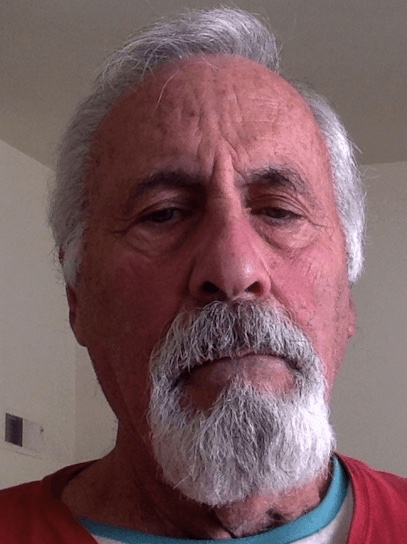
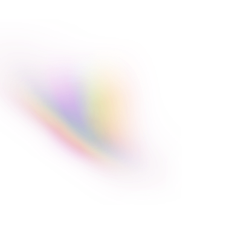

Ed Greenberg
Prescott, AZ
Hello, I'm Ed Greenberg
I have a background in teaching, training, and developing educational products. I’m based in sunny Prescott, AZ.


A little about me
I’ve always had a passion for teaching, especially reading, and have taught in a wide variety of environments.
I think I may have a better way to teach struggling kids (and adults) how to read fluentlly and am preparing to try it out.